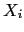
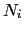
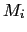
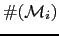
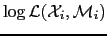
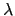
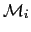
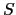
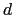
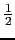

Next: Rich Transcription evaluation datasets Up: Robust Speaker Diarization for Previous: Possible Future Work Topics Contents
The purpose of this appendix is to show the equivalence between two different representations of the Bayesian Information Criterion (BIC), one based on the likelihood of the data given the models, which allows the models to be arbitrary and as complex as necessary given the task at hand, and another representation only dependent on the sufficient statistics of the data, which considers the case of a single Gaussian modeling the data. These two representations are used alternatively in the bibliography with various modifications, which sometimes cause the results not to be comparable between each other.
Given an acoustic segment  with  acoustic frames, modeled by  which is an arbitrary model with a certain number of free parameters to estimate from the data, given by , which accounts for the complexity of such model. The general BIC expression of such model using the likelihood of the data is given by
Being  the log-likelihood of the data given the considered model. The parameter  is a design parameter which is not part of the original BIC formulation but which is used to change the effect of the penalty term in the formula. Such formula allows the model  to be of any kind.
If instead it is considered that the model is created by a single Gaussian, eq. A.1 can be rewritten as
where  is the covariance matrix representing the data and  is its dimension. Such formulation only depends on the sufficient statistics of the data, and therefore its computation is very fast.
Let us progress from equation 2.1 into obtaining equation A.2. Considering that the used model is a single Gaussian with full covariance, one can rewrite eq. 2.1 as
by doing the products one obtains a sum of terms in the exponential, where each terms is a scalar value. One can use mathematical properties of the trace in order to obtain a closer form for it. As the trace(scalar) = scalar, it does not change the result.
Let us then consider only the trace of the numerator in the exponent
Given this result and going back to the BIC formulation in eq. A.3 and using the log properties
Obtaining finally
| (A.4) |
Which is in fact equation A.2. Note that a factor  applies to each term in the expression. Such factor is sometimes omitted, causing the optimum factor to differ in the different implementations.
user 2008-12-08